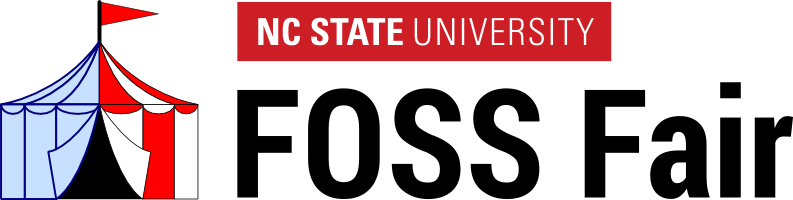

<div class="row">
  <div class="col-md-8 col-md-offset-2">
    <h2>Presentations</h2>

    <div class="panel panel-default">
      <div class="panel-heading">
        <h3 class="panel-title"><a href="http://lug.ncsu.edu/fossfair/FossFair2015">Getting Started with a VPS</a> <small>FOSS Fair 2015</small></h3>
      </div>
      <div class="panel-body">

        <div class="media">
          <div class="media-left">
            <a href="foss-fair-2015">
              
            </a>
          </div>
          <div class="media-body">
            A workshop/tutorial presented at the
            <a href="http://lug.ncsu.edu/fossfair/FossFair2015">sixth
            annual NC State FOSS Fair</a>, Raleigh, NC, February 7, 2015.
            <ul>
              <li>What is a VPS and why is it a worthwhile investment?</li>
              <li>Creating a VPS on <a href="https://www.digitalocean.com/?refcode=4ec898acbe2a">Digital
                  Ocean</a> and setting up an Apache website</li>
            </ul>
          </div>
        </div>

      </div>
    </div>

  </div>
</div>
